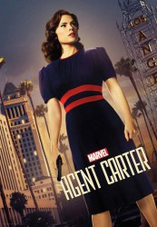

")
Alternativ: Agent Carter
 
 IMDB-Wertung: 8.0 / 10
IMDB-Wertung: 8.0 / 10  Metascore:
Metascore: 
New York, 1946: Agentin Peggy Carter kämpfte während des Krieges Seite an Seite mit Steve Rogers alias Captain America. Doch nach Ende des Krieges sieht sie sich beim Geheimdienst Strategic Scientific Reserve (SSR) zu einer besseren Sekretärin degradiert. Aber dann braucht Howard Stark dringend ihre Hilfe: Als einige seiner tödlichsten Erfindungen auf dem Schwarzmarkt auftauchen, wird er von der Regierung und der SSR des Hochverrats beschuldigt. Um seinen Namen reinzuwaschen, bittet er Peggy, die wahren Schuldigen zu finden und seine Waffen sicherzustellen.
Jahr: 2015
Dauer: 42 Minuten
FSK:
Land: USA Studio: ABCTonspuren:
Untertitel: Deutsch, Englisch,
Auflösung: 720p (1280x720) Größe: 48640 MB
Genre: Action, Sci-Fi, Abenteuer, TV-Serie
Regisseur: Jennifer Getzinger, Metin Hüseyin, David Platt, Lawrence Trilling, Craig Zisk
Drehbuch: Jack Kirby, Stan Lee, Christopher Markus, Stephen McFeely, Sue Chung
Soundtrack:
Darsteller:
 Hayley Atwell als Peggy Carter
Hayley Atwell als Peggy Carter James D'Arcy als Edwin Jarvis
James D'Arcy als Edwin Jarvis Enver Gjokaj als Daniel Sousa
Enver Gjokaj als Daniel Sousa Shea Whigham als Roger Dooley
Shea Whigham als Roger Dooley Lyndsy Fonseca als Angie Martinelli
Lyndsy Fonseca als Angie Martinelli Currie Graham als Calvin Chadwick
Currie Graham als Calvin Chadwick Lotte Verbeek als Ana Jarvis
Lotte Verbeek als Ana Jarvis Kurtwood Smith als Vernon Masters
Kurtwood Smith als Vernon Masters Dominic Cooper als Howard Stark
Dominic Cooper als Howard Stark Ken Marino als Joseph Manfredi
Ken Marino als Joseph Manfredi Ralph Brown als Dr. Ivchenko
Ralph Brown als Dr. Ivchenko Ray Wise als Hugh Jones
Ray Wise als Hugh Jones Meagen Fay als Miriam Fry
Meagen Fay als Miriam Fry Kyle Bornheimer als Ray Krzeminski
Kyle Bornheimer als Ray Krzeminski Chris Browning als Rufus
Chris Browning als Rufus Sarah Bolger als Violet
Sarah Bolger als Violet Tom Choi als Dr. Chung
Tom Choi als Dr. Chung James Frain als Leet Brannis
James Frain als Leet Brannis James Landry Hébert als Sasha Demidov
James Landry Hébert als Sasha Demidov Casey Sander als Thomas Gloucester
Casey Sander als Thomas Gloucester Devin Ratray als Sheldon McFee
Devin Ratray als Sheldon McFee James Urbaniak als Miles Van Ert
James Urbaniak als Miles Van Ert Ralph Garman als Radio Announcer
Ralph Garman als Radio Announcer Chris Coppola als Hank
Chris Coppola als Hank Neal McDonough als Dum-Dum Dugan
Neal McDonough als Dum-Dum Dugan Leonard Roberts als Happy Sam Sawyer
Leonard Roberts als Happy Sam Sawyer Glenn Taranto als Detective Prendergast
Glenn Taranto als Detective Prendergast Jack Conley als Colonel Ernst Mueller
Jack Conley als Colonel Ernst Mueller John Prosky als Walt Cooper
John Prosky als Walt CooperDatei: X:\Comic-Serien\Marvel's Agent Carter\S01\Marvels Agent Carter S01E01 Das ist nicht das Ende.mkv seit 25.11.2015
Festplatte: Comicverfilmungen+MusikCD
 Es gibt insgesamt 34 Filme in der Gruppe 'Comic-Serien'
Es gibt insgesamt 34 Filme in der Gruppe 'Comic-Serien'